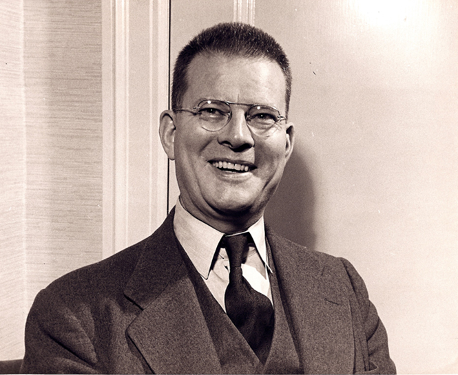

W.A. Shewhart
Process controls originate with Dr. W.A. Shewhart. While working for Bell Telephone in the early 20th century, he applied statistical methods to support the improved quality in the production of telephones. Naturally, the output of a process includes some variability. Shewhart's objective was to discriminate between "assignable causes" of this variability (which can then, in turn, be controlled for), versus the natural variability - or random noise (that cannot be controlled). If you've heard of the traditional Plan-Do-Study-Act (PDSA) cycle, it originates with Shewhart. This was considered revolutionary at the time. Interestingly, it was not a lengthy report that convinced Bell executives to adopt Shewhart's proposed methods - it was a one-page memo, including a diagram of a control chart.
W.E. Demming
Ever wonder how Japanese automotive manufacturers came to dominate the North American vehicle industry?
While at Bell Telephone, Dr. Shewhart worked with a more junior employee - Dr. E. Demming. Demming was enthralled by Shewhart's work in applied statistics. A couple decades later, Demming was called by Gen. Douglas MacArthur to assist the rebuilding of post-war Japan. While there, his focus was primarily on providing statistical support to census activities. However, he often also provided consulting services to industry - including the automotive sector. More specifically, Honda, Nissan and famously, Toyota. Demming was far more than a statistician though. He instead focused on scientific management as a philosophy. His work with Toyota evolved into the "Toyota Production System" (TPS), what we know today as "Lean". By the early 1990s, the Toyota Camry was the number #1 selling compact-class vehicle in North America. Ford's profitability was in freefall. Who do you think Ford turned to for help? Demming, of course. Fast forward another 15 years and the Ford Focus was the number #1 selling sub-compact-class vehicle. Today, Demming is considered the "Godfather" of quality management.
What was so different about Demming's approach to management?
Traditionally, quality defects in production were invariably blamed on line-employees. Demming felt that this was misplaced. He attributed 85% of observed quality defects to failures in management. Whether it was a failure to hire or train an employee, design a robust process, or support line-employees with good tools (as examples). He expanded Shewhart's PDSA cycle to the Define-Measure-Analyze-Improve-Control (DMAIC). This cycle never ends and simply repeats (i.e., "continuous improvement"). He was also focused on reduced variability in the process output as a means of achieving process excellence. Consumers want consistency. If I buy a can of Coke in Toronto, it should taste the same as a can of Coke I might buy in Vancouver or Dallas. Lastly, he was also instrumental in the philosophy of "Total Quality Management". That is, that a process output isn't just the responsibility of line-workers but that everyone plays a role - finance, HR, marketing, etc. and achieving organizational goals requires a collective effort.
